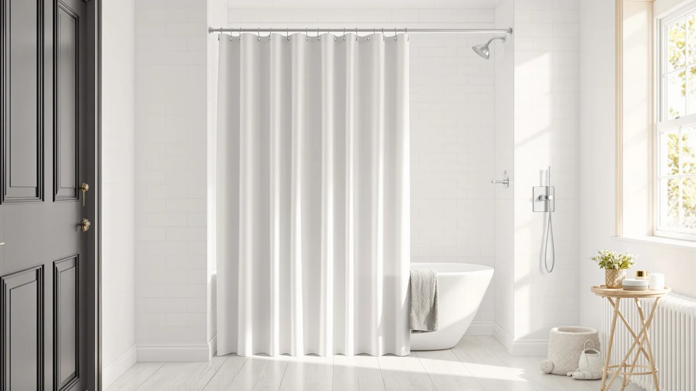

Best How to Clean Shower Curtain Liner (2026) | Best Shower Curtains


Things to Know Before You Buy
- Machine washing is safe for most liners. PEVA, EVA, vinyl, and fabric liners all survive a warm, gentle cycle. Check the care tag on anything labeled spot-clean only before you commit.
- Towels do the scrubbing for you. Two bath towels in the drum rub the plastic clean during agitation and stop the liner from tearing at the grommets.
- Heat is what kills a liner. Hot water and dryers warp plastic within minutes, and the puckering is permanent. Warm wash, air dry.
- Vinegar and bleach do different jobs. Vinegar dissolves soap scum and mineral film; bleach kills embedded mildew on white liners. Use one per wash, because combining them releases chlorine gas.
- Some liners are past saving. Black mildew spots that survive two washes have grown into the plastic. A replacement costs about $11 and hangs in two minutes.
Knowing how to clean shower curtain liner buildup saves you from the most common bathroom purchase there is: tossing a $10 liner every couple of months because it turned cloudy, gray, and pink along the hem. The fix takes about 30 minutes of hands-on work, and your washing machine does most of it. You need white vinegar, baking soda, mild detergent, and two bath towels you already own.
We run this exact wash on the liners in our own test bathrooms about once a month, and the method works the same on PEVA, EVA, vinyl, and fabric. Below are the five steps in order, the two mistakes that destroy liners (hot water and the dryer), and the point where washing stops making sense and a replacement wins.
What You'll Need
- Supplies: white vinegar (1 cup), baking soda (half a cup plus extra for spot paste), mild laundry detergent
- Tools: washing machine, plus a soft-bristle brush for spot-cleaning the liner by hand
Step 1: Take down the liner and shake it out
Unhook the liner from its rings and carry it to the tub. Hold the top edge and give it a firm shake so hair, grit, and dried soap flakes fall out. Whatever you shake off now stays out of your washing machine filter later, and a cleaner liner going in means one wash instead of two.
While the liner is down, look at the bottom hem where it meets the tub. That strip catches the worst of the soap scum and mildew, and it tells you what you are dealing with. Gray film and pink residue wash out fine. Black spots that have soaked into the plastic may survive the machine, so note them and check again after the cycle.
Inspect the grommets too. A liner with torn ring holes will tear further in the wash, and at that point cleaning the shower curtain liner costs more effort than replacing it. Small stress marks around intact holes are fine; the towels in the next step protect them.
Step 2: Load the washer with the liner and two towels
Spread the liner loosely around the drum instead of dumping it in a ball, then add two bath towels. The towels do two jobs. During agitation they rub against the plastic and scrub off buildup that detergent alone leaves behind, and they cushion the liner so it doesn't stick to the drum or tear along the folds.
Pick towels you can wash on warm, and stick to white or light colors. A dark towel can transfer dye onto a clear or frosted liner, and the tint doesn't come back out. A wadded liner is the other loading mistake worth avoiding: the machine can't clean the shower curtain liner inside creases it never opens, so the grime comes out exactly where it went in.
Step 3: Run a warm, gentle cycle with vinegar in the rinse
Add your normal dose of mild detergent, then pour half a cup of baking soda straight into the drum. The baking soda lifts the gray soap film that gives an old liner its cloudy look. Set the machine to a gentle or delicate cycle with warm water, not hot. Warm water loosens scum; hot water warps PEVA and vinyl into a puckered mess you can't flatten.
When the rinse starts, add one cup of white vinegar through the fabric softener dispenser, or pause the machine and pour it in. Vinegar dissolves the mineral and soap deposits the wash loosened, and it kills most surface mildew on contact. Skip the vinegar if you used bleach in the wash, since bleach and vinegar together release chlorine gas.
Set the spin to low or skip it. A fast spin creases a plastic liner hard enough that the folds stay visible for weeks, and the liner drips dry in the bathroom anyway.
Step 4: Scrub any leftover mildew spots by hand
Pull the liner out and inspect the bottom third under decent light. Most of it should look close to new. If a few mildew spots survived the wash, mix three parts baking soda to one part water into a paste, spread it over each spot, and work it in with a soft-bristle brush using small circles. Let the paste sit for ten minutes, then rinse it off in the tub.
Spots that resist the paste have grown into the plastic rather than sitting on it, and no brush gets pigment out of the material itself. Two failed treatments is your signal to spend $10-15 on a replacement instead of a third round of scrubbing. Cleaning a shower curtain liner is worth 30 minutes, not an afternoon.
Step 5: Rehang the liner and let it air dry
Hang the liner back on its rings while it is still damp. The weight of the water pulls out most wrinkles as it dries. Spread it fully across the rod instead of pushing it to one side, because a bunched liner traps moisture in the folds, and that trapped moisture restarts the mildew cycle you spent the last half hour breaking.
Run the bathroom fan or crack a window for an hour or two. Most PEVA and fabric liners dry within two to three hours in a ventilated bathroom. Keep the liner out of the dryer, even on low. Heat shrinks and puckers the plastic, and a warped liner clings to your legs mid-shower until you give up and buy a new one.
From here, a weekly spray of one-to-one vinegar and water on the bottom third keeps the clean shower curtain liner looking washed for four to six weeks between machine cycles.
Common Mistakes to Avoid
The mistake we see most often is hot water. People assume hotter means cleaner, run the liner through a hot cycle, and pull out a shrunken sheet of plastic with permanent puckers along the hem. Warm water cleans a shower curtain liner as well as hot does, and it leaves the material intact.
The second mistake is mixing cleaners. Bleach kills mildew and vinegar dissolves scum, so combining them sounds efficient. Together they produce chlorine gas, which can land you in the emergency room. Pick one per wash: bleach for white liners with heavy mildew, vinegar for routine cleaning and anything with color.
Skipping the towels causes quieter damage. A liner washed alone sticks to the drum, and the agitation stretches the grommet holes until the rings tear through. Two towels cost you nothing extra and double as scrubbers.
Drying is where people ruin a good wash. A dryer warps plastic within minutes, and rehanging the liner bunched against the wall keeps the folds wet for days, which restarts the mildew you removed. Spread it across the full rod and ventilate the room.
Waiting too long is the last one. A liner washed monthly comes clean in one cycle. A liner ignored for six months carries stains grown into the plastic, and at that point you're shopping, not cleaning.
Our Top Picks
A clean shower curtain liner still depends on the hardware around it. These are the three products we point readers to when a liner is past saving, or when a rusted rod turns the monthly takedown into a wrestling match.

Editor's Pick
Biscaynebay Hotel Quality Fabric Shower
This washable fabric curtain goes through the same warm cycle described above and comes out ready to rehang, with no vinyl smell and no clinging. At $10.99 it costs about the same as the plastic liner it replaces.
$10.99
Check Price on Amazon
Best Value
Ausemku Shower Curtain Rod Tension
A rustproof tension rod that installs without drilling, so taking the liner down for its monthly wash takes seconds instead of a fight with corroded hardware.
$15.99
Check Price on Amazon
Premium Choice
STARLATTA Shower Curtain Rod 31-80
The corrosion-resistant finish shrugs off the humidity that pits cheaper rods, and it holds a dripping-wet liner without sagging while the whole setup air dries.
$12.99
Check Price on AmazonFrequently Asked Questions
How often should you clean a shower curtain liner?
Machine-wash the liner once a month and spray the bottom third with one-to-one vinegar and water once a week. Households with hard water or three or more daily showers should move the wash to every two or three weeks, since scum builds faster under those conditions.
Can you put a plastic shower curtain liner in the washing machine?
Yes. PEVA, EVA, and vinyl liners survive a warm, gentle cycle when you add two bath towels to cushion and scrub the plastic. Keep the water warm rather than hot, use a low spin, and air dry. A dryer warps plastic liners within minutes, so skip it entirely.
Does vinegar remove mildew from a shower curtain liner?
Vinegar kills surface mildew and dissolves the soap film it feeds on, which handles most pink and light gray buildup. Black spots that have grown into the plastic resist vinegar and baking soda alike. If they survive two washes, the pigment is in the material and the liner needs replacing.
When should you replace the liner instead of washing it?
Replace it once black mildew spots survive two full washes, or sooner if the grommet holes have torn or the plastic stays cloudy and stiff after cleaning. A new liner costs about $11, so the second failed wash is the sensible cutoff for your time.
Can you clean a shower curtain liner without taking it down?
You can maintain it in place with a weekly spray of one-to-one vinegar and water on the bottom third, left to sit for a few minutes before the next shower rinses it. A deep clean still needs the machine, because the spray cannot reach inside the folds where scum accumulates.
Verdict
Once you know how to clean shower curtain liner buildup with the washing machine, the job shrinks to 30 minutes a month: shake it out, wash it warm and gentle with two towels and baking soda, add a cup of vinegar to the rinse, spot-treat what survives, and rehang it to air dry. The method costs about $8 in supplies you probably keep in the pantry, and it beats scrubbing in the tub on both effort and results. Respect the two limits. Heat destroys plastic liners, so warm water and air drying aren't optional, and black mildew that survives two washes has won the fight. At that point a replacement makes more sense than a third scrub, and the Biscaynebay fabric curtain at $10.99 is the one we recommend, since it goes through this same wash cycle for years instead of months. Wash monthly, spray vinegar weekly, and your liner stops being a recurring purchase.